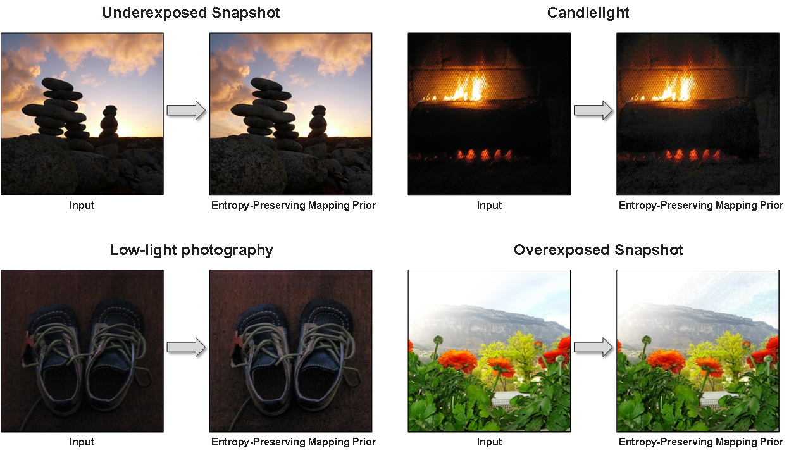

Contrast enhancement is a crucial image processing step for image quality control. However, images enhanced by conventional contrast enhancement methods can have negative effects on the performance of image quality control. The most commonly observed effects are over- and under-enhancement effects on images, which cause significant loss of fine textures in images. This paper developed a new contrast enhancement algorithm based on an entropy-preserving mapping prior that improves on conventional contrast enhancement methods. By creating a closed-form solution for enhancing the image contrast under this novel prior and learning the coefficients of the solution using an unsupervised learning strategy, an image’s contrast and texture can be effectively recovered. The experimental results verify that our proposed method clearly outperforms the existing state-of-the-art methods in terms of both quantitative estimation and qualitative human visual inspection.

Reimplementation in Python: [GitHub]
B. Chen, Y. Wu and L. Shi, "A Fast Image Contrast Enhancement Algorithm Using Entropy-Preserving Mapping Prior," IEEE Transactions on Circuits and Systems for Video Technology, vol. 29, no. 1, pp. 38-49, Jan. 2019. [pdf][bib]